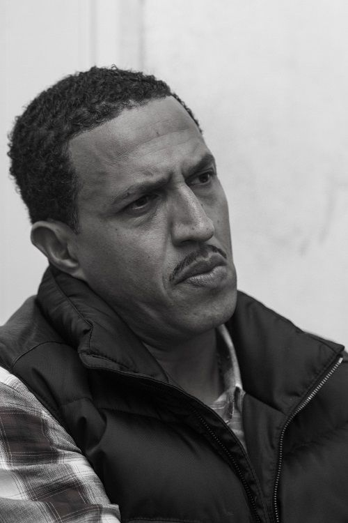

Mano Brown
Rapper e AtivistaPedro Paulo Soares Pereira, conhecido como Mano Brown, é o líder dos Racionais MC's, grupo de rap mais influente do Brasil. Nascido em 1970 no Capão Redondo, periferia de São Paulo, transformou a realidade das favelas em poesia combativa.
"O sistema é cruel e vil, mas não é invencível. A gente tem que ter consciência disso."
Seus álbuns com os Racionais, como "Sobrevivendo no Inferno" (1997), se tornaram clássicos que retratam a vida nas periferias com crueza e profundidade, influenciando gerações.